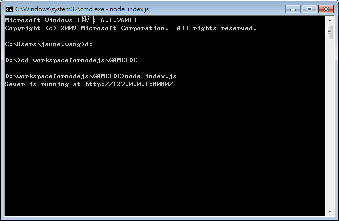

原文出处:本文由博客园博主王不留形提供。
原文连接:https://www.cnblogs.com/wblx/p/10863592.html
原文连接:https://www.cnblogs.com/wblx/p/10863592.html
nodejs版本：v10.14.2
1.首先准备一个简单的html页面


1 <!DOCTYPE html>
2 <html lang="en">
3 <head>
4 <meta charset="UTF-8">
5 <title>nodejs显示html</title>
6 </head>
7 <body>
8 <h1>看到这句话表示html页面成功显示了。</h1>
9 </body>
10 </html>2.接着准备一个index.js，跟index.html放在同一目录下
(1)导入需要用到的模块，都是nodejs自带的模块
const http = require("http"),
fs = require("fs"),
path = require("path"),
url = require("url");创建服务器当然需要http模块了，fs模块用来读写html的，path模块用来获取当前目录的，url模块用来解析输入的url的
(2)获取当前目录
// 获取当前目录
var root = path.resolve();因为index.html和index.js是放在一起的，属于同级，直接获取当前目录就行了。
(3)创建服务器
// 创建服务器
var sever = http.createServer(function(request,response){
var pathname = url.parse(request.url).pathname;
var filepath = path.join(root,pathname);
// 获取文件状态
fs.stat(filepath,function(err,stats){
if(err){
// 发送404响应
response.writeHead(404);
response.end("404 Not Found.");
}else{
// 发送200响应
response.writeHead(200);
// response是一个writeStream对象，fs读取html后，可以用pipe方法直接写入
fs.createReadStream(filepath).pipe(response);
}
});
});
sever.listen(8080);
console.log('Sever is running at http://127.0.0.1:8080/');createServer方法创建一个sever，每次请求从request拿到url，解析后找到文件，获取成功后写入response。
失败则发送404.
代码部分到此结束，接下来是测试
(4)测试
打开cmd，找到文件所在目录（当然用VS Code之类更方便，敲代码测试都在一起），键入node index.js

可以看到输出Sever is running at http://127.0.0.1:8080/，表示服务器已经搭建好了。
接着打开浏览器，输入http://127.0.0.1:8080/index.html
成功了！
附index.js完整代码：
1 "use strict";
2 const http = require("http"),
3 fs = require("fs"),
4 path = require("path"),
5 url = require("url");
6 // 获取当前目录
7 var root = path.resolve();
8 // 创建服务器
9 var sever = http.createServer(function(request,response){
10 var pathname = url.parse(request.url).pathname;
11 var filepath = path.join(root,pathname);
12 // 获取文件状态
13 fs.stat(filepath,function(err,stats){
14 if(err){
15 // 发送404响应
16 response.writeHead(404);
17 response.end("404 Not Found.");
18 }else{
19 // 发送200响应
20 response.writeHead(200);
21 // response是一个writeStream对象，fs读取html后，可以用pipe方法直接写入
22 fs.createReadStream(filepath).pipe(response);
23 }
24 });
25 });
26 sever.listen(8080);
27 console.log('Sever is running at http://127.0.0.1:8080/');